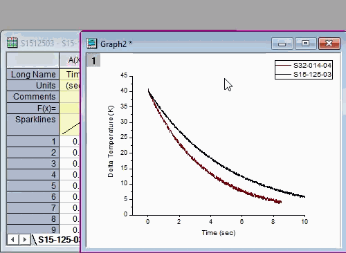
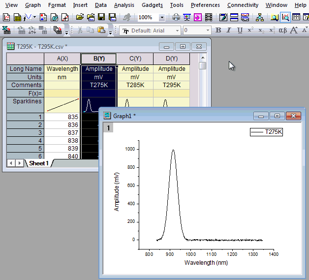
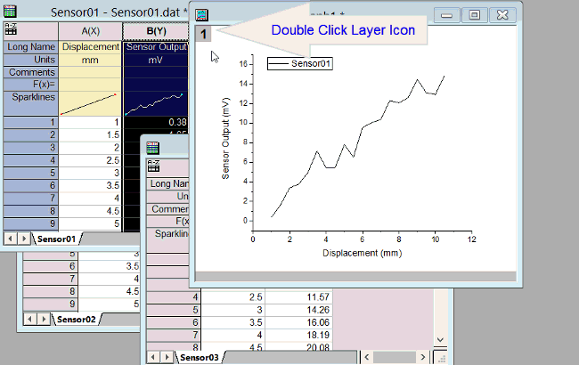
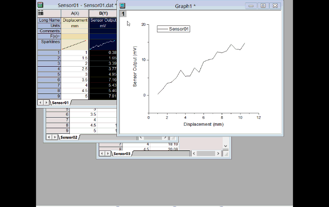
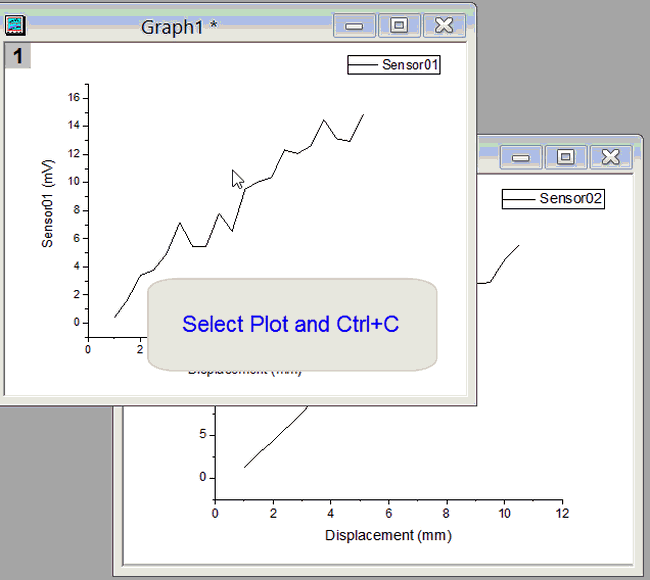

FAQ-144 既存のグラフにデータをプロットするには、どのような方法がありますか?
Add-Data-to-Layer
最終更新日：2020/7/7
ドラッグアンドドロップで追加
この方法は、ほぼ全てのワークシートから派生した2Dおよび3Dグラフに適用されます。
- ワークシートウィンドウに移動して、データセットを選択します。
- 選択範囲の左端または右端にカーソルを置き、カーソルが
 このように表示されたら、シートから目的のグラフレイヤにデータをドラッグアンドドロップします。 詳細については、ドラッグアンドドロップによるデータの追加を参照してください。
このように表示されたら、シートから目的のグラフレイヤにデータをドラッグアンドドロップします。 詳細については、ドラッグアンドドロップによるデータの追加を参照してください。

ワークブック/行列からコピー＆ペーストでプロット
この方法は、ワークシートまたは行列から作成された基本の2Dおよび3Dグラフで可能です。
- ワークシート/行列を開き、データセットを選択します。ミニツールバーが開きます。グラフ作図のためにコピーボタンをクリックします。
- 目的のグラフウィンドウをアクティブにして、編集：貼り付けを選択するか、Ctrl + Vキーを押してアクティブレイヤにプロットをコピーします。
- 
プロットをレイヤに追加
この方法は、2D 折れ線、散布図、線 + シンボル、棒グラフ、および面積グラフのみに適用されます。
- ワークシートウィンドウに移動して、データセットを選択します。
- グラフウィンドウに戻り、挿入するターゲットレイヤアクティブなレイヤになっていることを確認します。
- 挿入：レイヤにプロットを追加：プロット形式を選択します。
- 
レイヤ内容ダイアログを使用
- グラフウィンドウの左上のレイヤアイコンをダブルクリックします。 あるいは、レイヤフレーム内の余白上でクリックして、ミニツールバーを表示し、プロット追加ボタンをクリックします。
- レイヤ内容ダイアログを使ってレイヤにデータを追加します。 詳細は、このビデオチュートリアル：
レイヤ内容; またはこのトピック をユーザガイドでご覧ください。
- 
作図のセットアップダイアログを使用
- グラフの左上隅にあるターゲットレイヤのアイコンを右クリックし、作図のセットアップを選択します。
- ダイアログの上部パネルでワークシートを選択します。
- ダイアログの下部パネルでターゲットレイヤを選択します。
- 中央のパネルにX、Y、Errorなどの列を設定します。
- 追加ボタンをクリックします。
- 
作図のセットアップダイアログボックスのヘルプについては、作図のセットアップダイアログボックスでのデータプロットの追加、削除、置換または非表示、 または このビデオを参照してください。
既存グラフからコピー＆ペーストでプロット
単純な2Dプロットでのみこの方法で操作できます。
- 既存のグラフウィンドウからプロットをコピーして同じウィンドウまたは別のウィンドウに貼り付けるには、プロットを1回クリックしてCTRL + Cを押します。
あるいは、
プロット上で一度クリックし、ミニツールバーのプロットをコピーボタンをクリックします。
- 目的のグラフをクリックして、CTRL+Vを押します。
- 
詳しくは、プロットをコピー＆ペーストしてデータを追加を参照して下さい。
| Note：これらのメソッドは、いくつかの中間計算（ボックスチャート、ヒストグラム、3Dスタックなど）を使用して生成されたグラフタイプには適用されません。
|
キーワード: レイヤ, 内容, 複数, 曲線